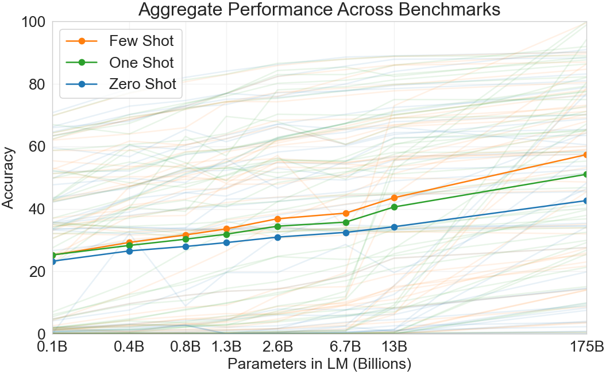

发展脉络
Kaplan 用幂律拟合 loss 与参数、数据和计算量；Chinchilla 说明固定预算下旧路线往往模型过大、训练 token 不足。
大模型最反直觉也最有用的一件事是：在极宽的范围内，模型的「测试损失」只由「算力、参数量、数据量」三者决定，跟架构细节关系很小。规模律就是这条经验规律，它让你不训大模型也能预测大模型的 loss，从而把「该训多大、喂多少数据」从玄学变成可计算的方程。
规模律的核心是一句话：给定一笔算力预算 $C$，存在一个「算力最优」的参数量 $N$ 和数据量 $D$ 的配比；算错了（要么模型太大没数据喂，要么数据太多模型装不下）都会让同样的钱换来更高的 loss。Kaplan（2020）认为应该把大头砸在参数上，Chinchilla（2022）用实验纠正为「参数和数据的量应该大致相等」。这张图给出从预算到配比的闭环。
规模律的本质是幂律（power law）。假设测试损失 $L$（通常是交叉熵，单位 nat/token）随某个量 $X$ 增大而下降，形式永远是：
其中 $X_c$ 是拟合出来的常数，$\alpha$ 是下降的「陡度」指数，$L_{\infty}$ 是当 $X\to\infty$ 时的不可约损失（irreducible loss，模型再大也学不会的那部分）。这个形式对参数 $N$、数据 $D$、算力 $C$ 三个量都各自成立——这是 2020 年 Kaplan 等人《Scaling Laws for Neural Language Models》最核心的发现。

| 规模律形式 | 控制变量 | Kaplan 拟合指数 | 含义 |
|---|---|---|---|
| 参数量律 $L(N)$ | 固定数据与算力，只放大模型 | $\alpha_N \approx 0.076$ | 参数每翻 10 倍，loss 大约降 $10^{-0.076}\approx 0.83$ 倍 |
| 数据量律 $L(D)$ | 固定参数与算力，只加数据 | $\alpha_D \approx 0.095$ | 数据每翻 10 倍，loss 大约降 $10^{-0.095}\approx 0.80$ 倍 |
| 算力律 $L(C)$ | 在最优配比下放大总算力 | $\alpha_C \approx 0.073$ | 算力每翻 10 倍，loss 大约降 $10^{-0.073}\approx 0.84$ 倍 |
注意指数都只有 $0.07\sim0.10$ 这么小，这正是「边际收益递减」的数学表达：要让 loss 明显下降，算力得翻数量级。这也解释了为什么大模型训练是「以百倍资源换几个点」的游戏。
Kaplan 等人最早把这三条律放在一起，并回答了「给定算力 $C$，N 和 D 该怎么分」：把 $C$ 当作约束（当时估算训练算力 $C \approx 6ND$ FLOPs），在固定 $C$ 下同时变 $N$ 和 $D$ 求最小 loss，得到的结论是 $N \propto C^{0.73}$，$D \propto C^{0.27}$——也就是应该把大部分算力砸在扩大模型上，数据只随算力缓慢增长。
这条结论直接催生了一批「能大则大」的模型：GPT-3（175B 参数，约 300B tokens）、Gopher（280B 参数，300B tokens）都严重偏向大参数、相对少数据。直觉上「模型容量是瓶颈」似乎有道理。
2022 年 DeepMind 的《Training Compute-Optimal Large Language Models》（Chinchilla）做了一件更扎实的事：固定每一档算力 $C$，同时扫很多组 $(N, D)$ 组合，画出每条「等算力线」上 loss 随 $N$ 变化的 U 形曲线，取最低点作为该算力下的最优 $N$。这类实验叫 isoFLOP 分析。
结论很干净：在 Chinchilla 重估的幂律指数下（两者约 $\alpha \approx \beta \approx 0.5$），最优配比是 $N$ 和 $D$ 随 $C$ 等速增长，即 $N \propto C^{0.5}$，$D \propto C^{0.5}$。换句话说——参数和数据应该 1:1 地同步放大，而不是 Kaplan 说的 73:27。Chinchilla 还给出具体证据：一个 70B 参数、在 1.4T tokens 上训练的模型，超越了 280B 参数、300B tokens 的 Gopher，而两者算力预算相近。
| 模型（公开数据） | 参数量 $N$ | 训练 tokens $D$ | 相对 Chinchilla 最优 |
|---|---|---|---|
| GPT-3 | 175B | 约 300B | 远未喂够数据（偏 Kaplan 式） |
| Gopher | 280B | 约 300B | 严重欠数据 |
| Chinchilla | 70B | 1.4T | 接近同算力最优 |
| LLaMA（7B） | 7B | 约 1T | 略超 Chinchilla 最优（数据更充足时多喂有益） |
这张表说明：Chinchilla 不是「数据越多越好」的极端，而是「在同算力下别让参数饿着数据」。当语料确实充足（如 LLaMA 系列、Llama 3 用远超 Chinchilla 最优的 tokens），多喂数据仍然能继续降 loss——因为约束从「算力」变成了「数据可获取量」，此时已不在同算力最优的讨论框内。
规模律最有工程价值的能力是外推：在几个 10^18~10^20 FLOPs 的小模型上测出 $(C, L)$ 点，拟合出幂律，就能预测 10^24 FLOPs 大模型大致会到多少 loss，而不必先花几百万美元训它。流程如下：
外推不是免费的：
Chinchilla 假设「数据无限」，于是得出 $N:D \approx 1:1$。但现实是高质量人类文本有上限。2023 年 Muennighoff 等人的《Scaling Data-Constrained Language Models》研究了「数据不够时怎么办」：当可用数据 $D$ 卡死，继续加大 $N$ 会让模型「过训练」——loss 仍会降（因为反复看同样数据有正则化效果），但收益远低于同算力下增加多样性；而且反复刷同一批数据对真实泛化的增益有限。
| 情形 | 约束 | 最优策略 | 规模律是否直接可用 |
|---|---|---|---|
| 算力受限、数据充足 | $C$ 是瓶颈 | Chinchilla：$N\propto D\propto \sqrt{C}$ | 可用，最经典场景 |
| 数据受限 | $D$ 是瓶颈 | 在数据上做多 epoch（repeat）、补合成数据，但警惕过拟合与模型坍缩 | 需修正，原律高估收益 |
| 推理成本敏感 | 想要小模型 | 给定 $N$ 用小数据多训（过训练），逼近该 $N$ 的 loss 下限 | 部分可用，偏向 $D$ 侧 |
| 架构变动大 | MoE / 新注意力 | 必须重估幂律指数，不能套 Dense 的指数 | 指数要先拟合 |
近年还出现了「过训练比 Chinchilla 最优更划算」的产业实践：LLaMA、Llama 3、DeepSeek 等用远超同算力最优的数据量训练小模型，因为（1）数据确实拿得到，（2）推理时小模型更便宜、部署更广。这说明「最优」取决于你的真实目标——是「固定算力要最低 loss」还是「固定部署成本要最好效果」，两者答案不同。
规模律不是论文里的曲线，而是一张「立项预算表」。当你要决定「训一个多大的模型、准备多少语料、大概烧多少算力」时，它给出第一版可计算的估计。下面用三个具体动作把它落到工程里。
假设你想训一个 13B（约 $1.3\times10^{10}$ 参数）的 dense 模型，目标是「接近 Chinchilla 最优」而非极致过训练。代入 $C\approx 6ND$ 与最优配比 $N\approx D$：
| 目标模型（示意） | 参数量 $N$ | 数据量 $D$（Chinchilla 最优） | 训练算力 $C\approx 6ND$ |
|---|---|---|---|
| 7B 模型 | $7\times10^9$ | ≈7B tokens | ≈$2.9\times10^{20}$ FLOPs |
| 13B 模型 | $1.3\times10^{10}$ | ≈13B tokens | ≈$1.0\times10^{21}$ FLOPs |
| 70B 模型 | $7\times10^{10}$ | ≈70B tokens | ≈$2.9\times10^{22}$ FLOPs |
| 过训练示例（7B, 1T tokens） | $7\times10^9$ | $1\times10^{12}$ | ≈$4.2\times10^{22}$ FLOPs |
这张表的意义不在精确数字（常数与具体实现会改），而在数量级直觉：每升一档参数，最优数据量同比例升，而算力按两者乘积升——所以「大一点」的成本是乘性的，不是加性的。立项时先拿这张表给老板一个量级，再进入 isoFLOP 细调。
上文所有「最优配比」都依赖一个由你自己数据/架构拟合出来的常数。最稳的做法不是套 Chinchilla 的 $k$，而是在你拟训的 $N$ 附近、用你自己的 tokenizer 和数据，训 3–4 个不同 $D$ 的小模型，画出属于你的那条等算力 U 形曲线、取最低点。这一步多花的几万美元，能避免后面上亿预算押错配比。
$C$ 算出来后还要落到现实：用集群单卡吞吐（如某卡约有 150–300 TFLOPs 的 BF16 有效算力，MFU 取 40%–50%）除以 $C$，得到大致挂钟时间；再乘卡数与电价/租金，得到预算。这步把「规模律的预测」翻译成「立项文档里的两行数字」，也是它工程价值的最后一公里。
把损失写成双变量幂律，约束用训练算力 $C = 6ND$：
$$L(N,D) = A N^{-\alpha} + B D^{-\beta} + E,\qquad 6ND = C$$把 $D = C/(6N)$ 代入，得到只关于 $N$ 的函数：
$$L(N) = A N^{-\alpha} + B\left(\frac{6N}{C}\right)^{\beta} + E = A N^{-\alpha} + B\,6^{\beta} C^{-\beta} N^{\beta} + E$$对 $N$ 求导并令其为 0：
$$\frac{dL}{dN} = -\alpha A N^{-\alpha-1} + \beta B\,6^{\beta} C^{-\beta} N^{\beta-1} = 0$$移项整理：
$$\alpha A N^{-\alpha-\beta} = \beta B\,6^{\beta} C^{-\beta} \;\Longrightarrow\; N^{\alpha+\beta} = \frac{\alpha A}{\beta B\,6^{\beta}}\, C^{\beta}$$当 $\alpha = \beta = 0.5$（Chinchilla 重估的指数）时，$\alpha+\beta = 1$，于是：
$$N = \left(\frac{A}{B}\right) \cdot 6^{-0.5} \cdot C^{0.5} \quad\Longrightarrow\quad N \propto C^{0.5}$$再由 $D = C/(6N)$ 得 $D \propto C / C^{0.5} = C^{0.5}$，即 $N$ 和 $D$ 同步随 $\sqrt{C}$ 增长。对比 Kaplan 的 $N\propto C^{0.73}$，差别全在那个指数——Chinchilla 的功劳是用 isoFLOP 实验把 $\alpha$ 重新估得更小，从而把「钱」从参数挪回数据。
实务上你不必手推，直接用公式：给定 $C$，先估 $N_{\text{opt}}\approx \sqrt{C/6}\times\text{常数}$，再令 $D=C/(6N_{\text{opt}})$。更稳的做法是用自己小模型的 isoFLOP 曲线去定那个常数，而不是套别人的。
下面这段脚本演示「测几个小模型 → 在 log-log 空间线性拟合 → 外推」。数据点是你自己的实测 $(C, L)$；这里用一组示意值，运行前请替换成真实实验。
import numpy as np
# 示意：4 个小模型测得的 (算力 C FLOPs, 测试损失 L)
C = np.array([1e18, 3e18, 1e19, 3e19], dtype=float)
L = np.array([3.20, 2.95, 2.70, 2.48], dtype=float)
# 幂律 L = (Cc/C)^alpha + Linf -> 在 log 空间近似线性
# 简化：先忽略 Linf，拟合 log L 对 log C 的斜率
logC, logL = np.log(C), np.log(L)
alpha, intercept = np.polyfit(logC, logL, 1) # 斜率就是 -alpha
alpha = -alpha
print(f"拟合指数 alpha ≈ {alpha:.3f}") # 应接近 0.07~0.10
# 外推到目标算力
C_target = 1e24
L_target = np.exp(np.polyval([ -alpha, intercept ], np.log(C_target)))
print(f"C={C_target:.0e} 预测 loss ≈ {L_target:.3f}")
# 注意：外推 5 个数量级，必须先在中段训锚点验证另一段是算力→最优配比的快速换算，基于 $C\approx 6ND$ 与 $N\approx D$：
def chinchilla_plan(compute_flops):
"""给定算力预算(FLOPs)，返回近似最优参数量与 token 数(示意常数)。"""
# N_opt ≈ sqrt(C / 6) * k，这里 k 取 1 仅作量级演示，实务需自己 isoFLOP 定标
N_opt = (compute_flops / 6) ** 0.5
D_opt = compute_flops / (6 * N_opt) # 即也 ≈ N_opt
return N_opt, D_opt
for C in [1e21, 1e22, 1e23]:
n, d = chinchilla_plan(C)
print(f"C={C:.0e} -> N≈{n/1e9:.1f}B params, D≈{d/1e9:.0f}B tokens")很多人把 Kaplan 和 Chinchilla 的指数当成"物理常数"，直接套在自己的模型上做预算。这其实是个误解：幂律的形状（形式）是普适的——只要在平稳区，损失随规模下降总近似幂律；但指数本身是实验拟合出来的参数，它由你的 tokenizer、语料分布、模型架构共同决定。换掉任何一样，指数就会漂。
举几个会实质改变指数的具体因素：
工程上的正确姿势是：把指数当成自己实验的参数，而不是继承的遗产。在目标规模附近训 3–4 个小模型，重新拟合一条属于自己的幂律，再拿去做外推和预算。这比"引用 Chinchilla 的 0.5"要慢几天，但换来的是预算不被押错方向。
规模律不是什么时候都该用。初学者最容易犯的错是"无脑放大"——反正幂律说越大越好。下面这张清单帮你判断"当前这个决策，规模律能不能给答案"：
| 决策场景 | 规模律能否直接回答 | 正确做法 |
|---|---|---|
| 固定预算下选参数量与数据量 | 能（Chinchilla 配比） | 先用公式估量级，再用 isoFLOP 校准自己的常数 |
| 要不要过训练小模型 | 部分能 | 看数据可获取量与推理成本，不能只看 loss |
| 换了新 tokenizer / 新架构 | 不能直接套 | 先重拟合幂律指数再外推 |
| 评估"该不该上 MoE" | 不能（指数不同） | 分开拟合两套幂律对比，别混用指数 |
| 预测下游能力（如 MMLU） | 间接 | loss 与下游近似单调，但要单独标定映射 |
这张清单背后的统一原则是：规模律回答的是"同一种训练方式下，把资源翻倍会发生什么"。一旦你改变了训练方式——新架构、新数据、新目标函数——原来的指数就不作数了。判断依据不是"数字多权威"，而是"我是不是还落在这条幂律拟合的范围内"。这也是为什么成熟团队的预算文档里，永远有一行"幂律指数来源与拟合范围"。
对初学者还有个提醒：规模律的结论来自"平均表现"，不代表你手里的具体任务也会同样缩放。某些对精确度极其敏感的窄任务（如固定格式的翻译），放大模型带来的收益可能远小于幂律预测；反之，某些"涌现型"任务在跨过规模阈值后会突然变好。正确姿势是把规模律当先验、把下游评测当裁判，两者结合才不会走偏。
规模律的一切输出都是"点估计"，而工程决策需要的是"区间"。拟合常数本身有统计误差，外推距离越远误差越大，再加上集群利用率、断点续训损耗这些实现因素，直接按公式算出来的算力去下单，通常会差出百分之几十。这不是公式错了，而是公式本来就只承诺"数量级正确"。
三条实操建议：一是预算在公式结果基础上上浮百分之三十到五十，把拟合误差和工程损耗一起吃掉；二是把规模律当作"比较工具"而非"绝对值"——它的价值在于回答"A 方案比 B 方案省多少算力"，而不是"精确到小数点后一位是多少 FLOPs"；三是每个里程碑设置一个验证锚点，如果实测 loss 偏离预测带，第一时间回到公式重新拟合，而不是硬着头皮继续放大。
规模律不是只给预训练团队看的。它直接约束了 数据工程 和 合成数据 的工作目标：
从「能预测」到「会修正」，规模律本身也是一条快速演进的线。下面把关键节点摆出来，方便你定位自己读到的结论属于哪一棒。
本章覆盖从数据到训练集群的完整预训练链路：目标函数、语料清洗与合成、Scaling Laws、并行策略、混合精度和稳定性。
阅读提示：预训练效果不是参数量单变量函数；数据质量、token 数、优化稳定性和通信效率共同决定最终结果。
最早系统刻画模型规模、数据量、计算量和损失之间幂律关系的工作。
Chinchilla 结论：固定算力下模型参数和训练 token 应共同增长，纠正只堆参数的直觉。
公开语料混合、来源比例和去重处理的代表性数据集论文。
张量并行、流水线并行和大规模 Transformer 训练工程的经典来源。
FSDP 的参数、梯度和优化器状态分片语义，适合将并行原理落到可运行配置。
资料优先选用原始论文、官方文档、大学课程和公共机构材料；链接按 2026-08-10 检索，具体版本以来源页面为准。
Kaplan 用幂律拟合 loss 与参数、数据和计算量；Chinchilla 说明固定预算下旧路线往往模型过大、训练 token 不足。
典型形式为 L=Linf+A/N^a+B/D^b；实验必须把训练 FLOP、token、序列长度、重算和通信纳入同一预算表。
小模型外推到大模型会受数据、架构和优化器影响，验证 loss 下降也可能与下游能力、污染和重复脱钩。
多 token 预测、数据质量分层、合成数据和测试时计算正在扩展 scaling law 的变量，尚未形成单一公式。